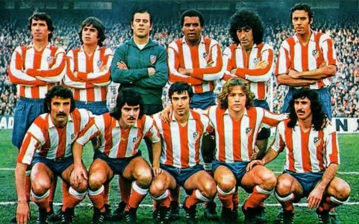

Revive la nostalgia del fútbol de los 90 con nuestra exclusiva colección.
Colección 90 nace de la pasión por el fútbol retro de los gloriosos años 90. Para los que vivimos esa época, una camiseta es un viaje en el tiempo a estadios vibrantes, jugadas épicas e ídolos inolvidables como Baggio o Zidane. Este proyecto surge de la necesidad de preservar esos momentos únicos, entendiendo que estas camisetas vintage son símbolos de identidad y orgullo. Queremos ser el punto de encuentro para fanáticos que valoran la historia en cada zamarra Umbro, Adidas o Kappa. Buscamos esas joyas con historias para ofrecerlas a quienes las aprecian. En Colección 90, celebramos una década clave del fútbol moderno, ayudándote a encontrar esa prenda que revive goles, títulos y la estética inconfundible de tu equipo soñado. ¿Listo para revivir la nostalgia y encontrar tu tesoro futbolístico de los 90? ¡Bienvenido a Colección 90, donde el pasado del fútbol late con pasión!
Atletico de Madrid, Temporada: 91-92
Arsenal, Temporada: 00-01